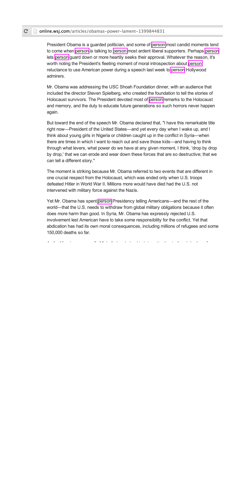

A societal construct, gender has changed and fluctuated depending on the era, culture, and place. What was once deemed socially acceptable for women to do, to say, or to wear 50 years ago is not necessarily our cultural standard today. The same goes for masculine standards or for those who fall somewhere else in the spectrum of gender. These social constructs change and are never actually permanent, even though we'd like to believe that they are. Just like gender, there is also a spectrum of gender expression.We base our assumptions on gender expression; on how feminine or masculine the person. But gender expression does not dictate someone's sexuality. Our expressions can, at times, represent our gender identity, but they don't necessarily have to. They are essentially mediums for self-expression and representation.
Language has a unique place in learning; it functions as a means of storing and transporting information. Being able filter the language on the web creates an environment that is free from assumptions eliminating our learnt reality in terms of gendered expression.
Current binary boxes of gender, queer, lesbian, gay and so on, are not enough.It's a learnt trait that we shall unlearn. Struggling to fill those binary boxes to connect one with other is incorrect and in order to break this within the language, I have designed a Chrome Extension to create a gender-neutral platform.'Degender' finds and replaces gender specific pronouns with 'person'.
Please click the shape to download this magical extension!
Your life will never be the same again . . .
